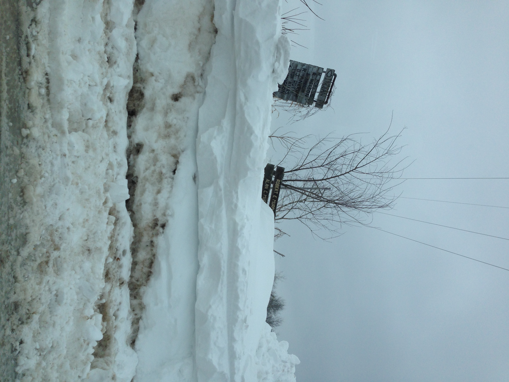
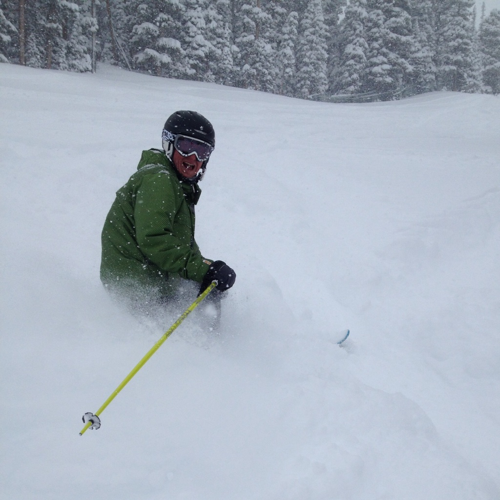

Moving to Nikola
Posted:
When I moved this blog to Octopress in January, it was inspiring in many ways. There were two things that slightly bugged me.
- Octopress is entirely too ruby based. Rake, and all of that made me feel bad, like I was cheating on Python. Surely there must be a similar tool in the Python world I thought to myself.
- Octopress uses markdown. I really like my restructuredText, and its just a bit irritating to have to think about the differences when I want to do a blog post.
Well, this weekend I found a couple of new static blog site generators that were python based, and after playing around with Pelican, and Nikola I settled on the move to Nikola. I really like the image galleries and slideshows that are built in, and I feel like I can jump in and start hacking if something develops that I really want to change. Plus, having already hacked a bunch of restructuredText directives, I know I can extend my blogging tool to do all kinds of fun things.
Why MOOCs? Why not?
Posted:
I just wanted to include a link here to my latest post on Luther's Ideas and Creations blog. Its just some thoughts and questions I had on MOOCs and online education at Luther College. Why Moocs? Why Not?
Winter Skiing in the Spring
Posted:
Two days of skiing at Tahoe are in the bag, but what a difference between the two days. Yesterday we got the true spring skiing experience. It was cool and crusty in the morning and a bit slushy in the afternoon. Its been a pretty bad winter here in Tahoe so a lot of the runs were not accessible. In the morning we went up the Stagecoach express and turned left, to try the Stagecoach run. It was the worst skiing I have ever experienced in my life. Thankfully, we learned the trick. Stay on the groomed runs! Once we figured that out the day was a blast, if a bit repetitive. One thing you can't beat is the views. Bright sunny day, clear blue sky, good friends to ski with. What could be better?
I also love this photo for all of the layers. High clouds, low clouds, shadows of clouds on the brown/green valley floor below.


Overnight, the winds kicked in, and the snow came down. Up to eight inches in the higher elevations. This made for a second day of mid-winter like skiing. Suddenly, all the runs that were not good yesterday were very ski-able with a fresh layer of snow. The only downside was that the winds and snow continued. We were told in the morning that all the lifts might have to shut down, at some point because thunder (and lightning) were in the forecast for the day. I've never thought about being up on a ski lift in a thunderstorm before but I'm pretty sure I wouldn't want to be there.
In any case, if they do shut down certain of the lifts, then you are in trouble anyway...
Lake Tahoe
Posted:
A Rare Day
Lake Tahoe is beautiful. We arrived last night from Napa and got to our VRBO home, it is great and we had a beautiful view of the lake out our windows. The sun was just going down and I captured this picture of the Sequoia outside our window.

Today we drove the east side of the lake and met Jim and Karen for lunch, then we went to Emerald bay in the afternoon after Pete and Kim joined us. Its really hard to describe or write too much about this, so I will just add a few photos here.


The Word of the Day is Malolactic
Posted:
Brought to You by the Letter 'C'
I must confess, after all of the Chardonnay I've consumed, and I have consumed my share over the years, I have never really got the "buttery oaky Chardonnay" thing. Butter is just not something I've ever tasted in my Chardonnay, despite the fact that one of my all time favorites is Rombaur, which according to more than one person in Napa, is the "poster child" for buttery oaky Chardonnays. Really, who wants their Chardonnay to taste like butter? The whole describing wine thing is another thing I find really interesting. One of the tasting room hosts, recommended the movie Somm to us as we were chatting. I see you can get/rent it on iTunes, so I'm adding that to my list. Its about a group of guys preparing for the master sommelier exam, which may sound a bit dull, but the reviews for it are fantastic.
But after two days of tastings in Napa its all clear to me now. The key that helped me understand the difference, and I'm confident I'm now an expert, is Malolactic Fermentation. The science of it all, unsurprisingly, has stuck in my brain. Here's a quick summary of more than you ever probably wanted to know.
Malolactic Fermentation is the process of converting Malic Acid (which tastes tart,and citrussy to my mouth) to Lactic Acid which is a much more mellow flavor. Malolactic fermentation occurs after fermentation and is the result of injecting a particular bacteria into the process.

Now, to each his own, but I can say that I am a fan of Malolactic Fermentation. Here are some of my favorites:
- Rombaur
- William Hill
- Carpe Deim
- Poseidon's Vineyard
Conquering the Tannins
I've never been able to drink red wine much due to my allergies. What am I allergic to in red wine? Tannin is a chemical that comes from the skins, seeds, and stems of the wine. They are much more prevalent in red wine than in white. Now according to our host at Chateau Montelena (see also the movie Bottle Shock) I need to develop a resistance to Tannins in order to drink red wine. The way to do this, according to this would be allergist, is to begin with Pinot Noir, and work my way up from there. Well it sounds like a project, and I do enjoy a nice glass of Pinot. So, something to work on. All in the name of self improvement of course.
The Long Winter
Posted:
When I was little, I read all of the Laura Ingalls Wilder books, including The Long Winter. That was the winter of 1880-1881 in case you are wondering. Lately my reading tastes lean more towards the Game of Thrones and the coming long winter in that story. Yesterday I arrived back in Minnesota after a chilly week in Atlanta, You will note by the date it is already the 8th of March. I'm writing this simply to document how much snow we've had here at Bone Lake this winter! As I pulled onto Indian Point road, I saw this:

Ok, I'd been seeing road signs totally buried in huge snow drifts since I turned North off highway 8, so I wasn't totally surprised that all the signs were buried. I wondered what our driveway would look like.
Easy Publishing with Runestone Interactive
Posted:
During my January travels, I also converted this blog from tubmlr, which had been frustrating me for a while, to Octopress, with which I have been very happy. Nothing like hacker level control of your own blog. But more, than just the switch in tools, the move to Octopress inspired me to make it easier for people to publish small or large works using the Runestone tools.
Yesterday, at the Learning @ Scale conference we demoed this new capability. See the demo here. To make it super easy to publish:
- Lecture slides
- Demonstrations
- A Tutorial
- Lab Instructions
- In class exercises
- A short module on your favorite topic not covered elsewhere
- An entire book
Reflections on January 2014
Posted:
I left home on December 27 2013. When I left I had 3 bags packed. One for our trip to Mazatlan to celebrate the new year with our friends the Vermace's. One for my January term class on the west coast, and finally a bag full of ski gear for the rest and relaxation trip to Breckenridge. Since leaving home I have travelled a bit over 10,000 miles. My means of travel has included several flights, two long train trips on Amtrak, some time in a car, and lots of time on public transportation.
In the last 35 days I've had more experiences than many people would have in a lifetime. I say this out of a sense of gratitude, and to remind myself how lucky I am.
On 14 inches of Powder
Posted:
The weather report said we had 6 inches of snow overnight. From the moment we walked out the door it was clear that they had underestimated the snowfall by about 8 inches.

We were on the third chair up at 8:30 this morning. The steep parts of the hill were awesome, with powder over my knees, floating through the snow. On the gentle parts of the hill we all formed a single file line in order to get through it all.
By mid-day it was work. The powder had been packed in many places and it was work to get through it. The snow continued heavily throughout the day, and we are supposed to get another 14 inches overnight.
This has been the perfect few days of rest and relaxation to finish off January term. Its even better because we bought the Epic local passes this year, which means we don't feel like we have to ski full time, but can actually just ski until we are ready to take a break, and then ski again later. Its been great.
Final Visits
Posted:
My daughter Kaia is getting married next summer. This is not new news, the proposal was made an accepted last June. But planning is in full swing now, and I was kind of excited when secured a visit with Capsule, because capsule provides a service where all the guests at your wedding can download the capsule app and it will automatically upload all the photos to a special page for the wedding.
This company was founded by Cyrus, who set out to solve a simple problem, a problem we've been coping with on this course as well. When you travel, how do you share all your digital photos with the buddies you are traveling with. When you have a big party? When you have a wedding, bachelor party, bachelorette party? Capsule has solved this in a nice, elegant way. All the photos uploaded for a particular event, are shared with the participants in the event. Its that easy. No need to bore all of your Facebook followers with every photo from your trip. If you're an Instagram user, its super easy to add a special hashtag to your photo and it will be automatically imported into Capsule as well as shared on Instagram.